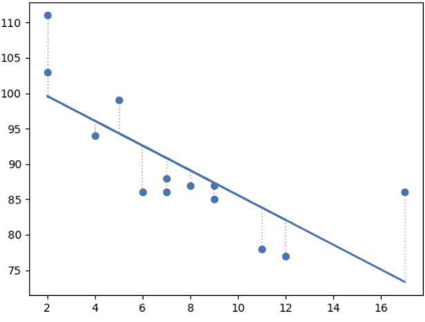
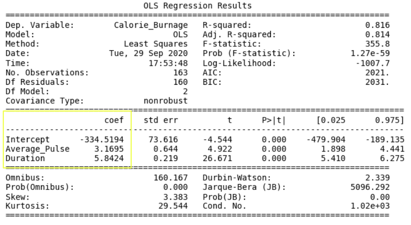

Data Science - Understanding Linear Regression
When analyzing Calorie_Burnage, it’s important to consider multiple variables.
One key variable that affects Calorie_Burnage is the Duration of the training session.
Combining Duration with Average_Pulse provides a more accurate explanation of Calorie_Burnage.
What is Linear Regression?
Linear regression is a method used to find the relationship between variables. In machine learning and statistical modeling, this relationship is used to predict outcomes.
In this module, we will address the following questions:
- Can we conclude that Average_Pulse and Duration are related to Calorie_Burnage?
- Can we use Average_Pulse and Duration to predict Calorie_Burnage?
Least Squares Method
Linear regression uses the least squares method. This method involves drawing a line through all the data points in a way that minimizes the distance (residuals or errors) from the data points to the line.
Illustration: The red dashed lines represent the distances from the data points to the regression line.
Linear Regression Using One Explanatory Variable
Let’s predict Calorie_Burnage using Average_Pulse with linear regression:
Python
- import pandas as pd
- import matplotlib.pyplot as plt
- from scipy import stats
- # Load the data
- full_health_data = pd.read_csv("data.csv", header=0, sep=",")
- # Define the variables
- x = full_health_data["Average_Pulse"]
- y = full_health_data["Calorie_Burnage"]
- # Perform linear regression
- slope, intercept, r, p, std_err = stats.linregress(x, y)
- # Define the regression function
- def myfunc(x):
- return slope * x + intercept
- # Apply the function to the data
- mymodel = list(map(myfunc, x))
- # Plot the data and the regression line
- plt.scatter(x, y)
- plt.plot(x, mymodel)
- plt.ylim(ymin=0, ymax=2000)
- plt.xlim(xmin=0, xmax=200)
- plt.xlabel("Average_Pulse")
- plt.ylabel("Calorie_Burnage")
- plt.show()
Explanation:
- Import necessary modules: Pandas, Matplotlib, and Scipy.
- Isolate variables: Average_Pulse as x and Calorie_Burnage as y.
- Perform linear regression: Obtain key values (slope, intercept, r, p, std_err) using
stats.linregress(x, y). - Create a regression function: Use the slope and intercept to define a function that predicts y values.
- Apply the function: Generate new y values using the regression function.
- Plot the data: Create a scatter plot of the original data and overlay the regression line.
- Define axis limits and labels: Set the limits and labels for the axes.
Output: The plot shows the linear regression line for predicting Calorie_Burnage based on Average_Pulse.

Question: Do you think this line can precisely predict Calorie_Burnage?
Conclusion: Average_Pulse alone is not sufficient for precise predictions of Calorie_Burnage.
Additional variables, such as Duration, should be considered for more accurate predictions.
Data Science - Understanding the Regression Table
A regression table summarizes the output from linear regression, providing key insights into the model. The table typically includes:
- Information about the model
- Coefficients of the linear regression function
- Regression statistics
- Statistics of the coefficients from the linear regression function
- Additional information not covered in this module
Example: Regression Table with Average_Pulse as Explanatory Variable

Linear Regression Table: This table helps you analyze advanced output from linear regression.
Creating a Linear Regression Table in Python
Here’s how to create a regression table using Python:
Python
- import pandas as pd
- import statsmodels.formula.api as smf
- # Load the data
- full_health_data = pd.read_csv("data.csv", header=0, sep=",")
- # Create the model using Ordinary Least Squares (OLS)
- model = smf.ols('Calorie_Burnage ~ Average_Pulse', data=full_health_data)
- # Fit the model
- results = model.fit()
- # Print the summary of the regression results
- print(results.summary())
Explanation:
- Import the necessary library:
statsmodels.formula.apiassmf. Statsmodels is a statistical library in Python. - Load the data: Use the
full_health_dataset. - Create the model: Use Ordinary Least Squares (OLS) with
smf.ols(). The explanatory variable (Average_Pulse) must be specified first in the parentheses. - Fit the model: Call
.fit()to obtain theresultsvariable, which contains detailed information about the regression model. - Print the summary: Call
summary()to display the regression table with the results.
This approach provides a comprehensive overview of the linear regression model, helping you understand the relationships between variables and the overall fit of the model.
Data Science - Understanding the “Information Part” in a Regression Table
The “Information Part” of a regression table provides key details about the regression model and its context. Here’s a breakdown:

- Dep. Variable: Short for “Dependent Variable.” In this example,
Calorie_Burnageis the dependent variable, which is assumed to be explained byAverage_Pulse. - Model:
OLSstands for Ordinary Least Squares, a type of regression model that uses the least squares method to minimize the sum of the squared residuals. - Date and Time: These fields indicate when the regression output was calculated in Python.
This section helps you understand the basic setup and context of the regression analysis.
Data Science - Understanding the “Coefficients Part” in a Regression Table
Explanation:
- Import the necessary library:
statsmodels.formula.apiassmf. Statsmodels is a statistical library in Python. - Load the data: Use the
full_health_dataset. - Create the model: Use Ordinary Least Squares (OLS) with
smf.ols(). The explanatory variable (Average_Pulse) must be specified first in the parentheses. - Fit the model: Call
.fit()to obtain theresultsvariable, which contains detailed information about the regression model. - Print the summary: Call
summary()to display the regression table with the results.
This approach provides a comprehensive overview of the linear regression model, helping you understand the relationships between variables and the overall fit of the model.
Data Science - Understanding the “Information Part” in a Regression Table
The “Information Part” of a regression table provides key details about the regression model and its context. Here’s a breakdown:
- Dep. Variable: Short for “Dependent Variable.” In this example,
Calorie_Burnageis the dependent variable, which is assumed to be explained byAverage_Pulse. - Model:
OLSstands for Ordinary Least Squares, a type of regression model that uses the least squares method to minimize the sum of the squared residuals. - Date and Time: These fields indicate when the regression output was calculated in Python.
This section helps you understand the basic setup and context of the regression analysis.
Data Science - Understanding the “Coefficients Part” in a Regression Table
The “Coefficients Part” of a regression table provides the coefficients of the linear regression function. Here’s a breakdown:

- Coef: Short for coefficient, it represents the output of the linear regression function.
The linear regression function can be mathematically expressed as:
Calorie_Burnage = 0.3296 × Average_Pulse + 346.8662
These numbers mean:
- If Average_Pulse increases by 1, Calorie_Burnage increases by 0.3296 (or 0.3 when rounded).
- If Average_Pulse is 0, the Calorie_Burnage is 346.8662 (or 346.9 when rounded).
The intercept adjusts the model’s precision in predicting outcomes.
Question: Do you think this is a good model?
Defining the Linear Regression Function in Python
You can define the linear regression function in Python to make predictions. For example, what is the Calorie_Burnage if Average_Pulse is 120, 130, 150, or 180?
Python
- def Predict_Calorie_Burnage(Average_Pulse):
- return 0.3296 * Average_Pulse + 346.8662
- print(Predict_Calorie_Burnage(120))
- print(Predict_Calorie_Burnage(130))
- print(Predict_Calorie_Burnage(150))
- print(Predict_Calorie_Burnage(180))
Data Science - Understanding the "Statistics of the Coefficient Part" in a Regression Table
In this section, we test whether the coefficients from the linear regression function significantly impact the dependent variable (Calorie_Burnage). This involves proving a relationship between Average_Pulse and Calorie_Burnage using statistical tests.
Key Components:
- std err: Standard Error
- t: t-value of the coefficients
- P>|t|: P-value
- [0.025 0.975]: Confidence interval of the coefficients
We’ll focus on understanding the P-value.
The P-value
The P-value helps determine if there is a relationship between Average_Pulse and Calorie_Burnage. We test if the true value of the coefficient is zero (no relationship) using hypothesis testing.
- Low P-value (< 0.05): Indicates the coefficient is likely not zero, suggesting a significant relationship.
- High P-value (> 0.05): Indicates we cannot conclude a significant relationship between the explanatory variable and the dependent variable. This is also called an insignificant P-value.
Hypothesis Testing
Hypothesis testing is a statistical procedure to validate results. In our example, we test if the true coefficient of Average_Pulse and the intercept is zero.
- Null Hypothesis (H0): The coefficient is zero (no relationship).
- Alternative Hypothesis (HA): The coefficient is not zero (there is a relationship).
Mathematically:
- H0: Average_Pulse = 0
- HA: Average_Pulse ≠ 0
- H0: Intercept = 0
- HA: Intercept ≠ 0
Interpreting the P-value
The null hypothesis can either be rejected or not. If we reject the null hypothesis, we conclude there is a relationship between Average_Pulse and Calorie_Burnage. The P-value is used for this conclusion.
- Threshold: A common threshold for the P-value is 0.05.
- A P-value of 0.05 means there is a 5% chance of falsely rejecting the null hypothesis.
- If the P-value is lower than 0.05, we reject the null hypothesis and conclude a relationship exists between the variables.
However, in this case, the P-value for Average_Pulse is 0.824. This means we cannot conclude a relationship between Average_Pulse and Calorie_Burnage, as there is an 82.4% chance that the true coefficient of Average_Pulse is zero.
The intercept is used to adjust the regression function’s predictive accuracy, so interpreting its P-value is uncommon.
Understanding R-Squared in a Regression Table
R-Squared and Adjusted R-Squared describe how well the linear regression model fits the data points.

Key Points:
- R-Squared Value: Always between 0 and 1 (0% to 100%).
- High R-Squared: Indicates that many data points are close to the regression line.
- Low R-Squared: Indicates that the regression line does not fit the data well.
Visual Example of a Low R-Squared Value (0.00)

An R-Squared value of zero means the regression line does not fit the data well. This can be visualized by plotting the regression line through the data points of Average_Pulse and Calorie_Burnage.
Visual Example of a High R-Squared Value (0.79)

When plotting Duration against Calorie_Burnage, the R-Squared value increases, indicating that the data points are closer to the regression line.
Python Code Example:
- import pandas as pd
- import matplotlib.pyplot as plt
- from scipy import stats
- # Load the data
- full_health_data = pd.read_csv("data.csv", header=0, sep=",")
- # Define the variables
- x = full_health_data["Duration"]
- y = full_health_data["Calorie_Burnage"]
- # Perform linear regression
- slope, intercept, r, p, std_err = stats.linregress(x, y)
- # Define the regression function
- def myfunc(x):
- return slope * x + intercept
- # Apply the function to the data
- mymodel = list(map(myfunc, x))
- print(mymodel)
- # Plot the data and the regression line
- plt.scatter(x, y)
- plt.plot(x, mymodel)
- plt.ylim(ymin=0, ymax=2000)
- plt.xlim(xmin=0, xmax=200)
- plt.xlabel("Duration")
- plt.ylabel("Calorie_Burnage")
- plt.show()
Summary - Predicting Calorie_Burnage with Average_Pulse
Key Findings:
- Coefficient of 0.3296: Indicates that Average_Pulse has a very small effect on Calorie_Burnage.
- High P-value (0.824): Means we cannot conclude a relationship between Average_Pulse and Calorie_Burnage.
- R-Squared value of 0: Indicates that the regression line does not fit the data well.
This summary highlights that Average_Pulse alone is not sufficient for accurately predicting Calorie_Burnage.
Data Science - Linear Regression Case
Case: Use Duration and Average_Pulse to Predict Calorie_Burnage
Creating a Linear Regression Table
Example:
- import pandas as pd
- import statsmodels.formula.api as smf
- # Load the dataset
- full_health_data = pd.read_csv("data.csv", header=0, sep=",")
- # Create the model
- model = smf.ols('Calorie_Burnage ~ Average_Pulse + Duration', data=full_health_data)
- results = model.fit()
- # Print the summary
- print(results.summary())
Explanation:
- Import the library:
statsmodels.formula.api as smf. Statsmodels is a statistical library in Python. - Load the dataset: Use the
full_health_dataset. - Create the model: Use Ordinary Least Squares with
smf.ols(). The explanatory variables must be written first in the parentheses. - Fit the model: By calling
.fit(), you obtain the variableresults, which holds information about the regression model. - Get the summary: Call
summary()to get the table with the results of the linear regression.
Output:
The linear regression function can be rewritten mathematically as:
Calorie_Burnage = Average_Pulse × 3.1695 + Duration × 5.8424 - 334.5194
Rounded to two decimals:
Calorie_Burnage = Average_Pulse × 3.17 + Duration × 5.84 - 334.52
Defining the Linear Regression Function in Python
Define the linear regression function in Python to perform predictions.
- def Predict_Calorie_Burnage(Average_Pulse, Duration):
- return 3.1695 * Average_Pulse + 5.8434 * Duration - 334.5194
- print(Predict_Calorie_Burnage(110, 60))
- print(Predict_Calorie_Burnage(140, 45))
- print(Predict_Calorie_Burnage(175, 20))
Predictions:
- Average pulse 110, duration 60 minutes: 365 Calories
- Average pulse 140, duration 45 minutes: 372 Calories
- Average pulse 175, duration 20 minutes: 337 Calories
Accessing the Coefficients
- Calorie_Burnage increases by 3.17 if Average_Pulse increases by one.
- Calorie_Burnage increases by 5.84 if Duration increases by one.
Accessing the P-Value
- P-value is 0.00 for Average_Pulse, Duration, and the Intercept.
- The P-value is statistically significant for all variables, as it is less than 0.05.
Conclusion: Average_Pulse and Duration have a relationship with Calorie_Burnage.
Adjusted R-Squared
- Problem with R-squared: It almost always increases if more variables are added, and never decreases.
- Adjusted R-squared: Adjusts for this problem, making it better to look at if there are multiple explanatory variables.
- Adjusted R-squared value: 0.814.
Conclusion: The model fits the data points well!
Congratulations! You have now finished the final module of the data science library.
Click For Top of page